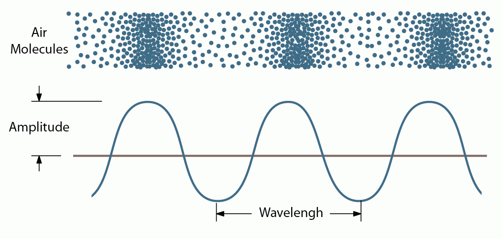
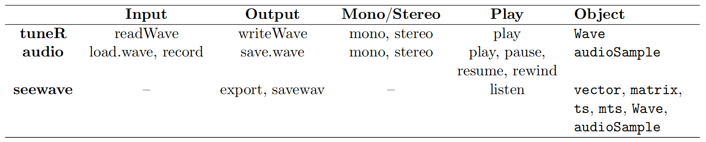

Sound
Analysis of animal acoustic signals in R
BOKU International wildlife lectures, 2022
BOKU International wildlife lectures, 2022
Marcelo Araya-Salas, PhD
“2022-03-09”
Sound waves are characterized by compression and expansion of the medium as sound energy moves through it. There is also back and forth motion of the particles making up the medium:

taken from https://dosits.org
The variation in pressure that is perceived at a fixed point in space can be represented by a graph of pressure (amplitude) by time:

Sounds in R
Sound waves can be represented by 3 kinds of R objects:
- Common classes (numerical vector, numerical matrix)
- Time series classes (ts, mts)
- Specific sound classes (Wave, sound and audioSample)
Non-specific classes
Vectors
Any numerical vector can be treated as a sound if a sampling frequency is provided. For example, a 440 Hz sinusoidal sound sampled at 8000 Hz for one second can be generated like this:
library(seewave)
# create sinewave at 440 Hz
s1 <- sin(2 * pi * 440 * seq(0, 1, length.out = 8000))
is.vector(s1)## [1] TRUEmode(s1)## [1] "numeric"
These sequences of values only make sense when specifying the sampling rate at which they were created:
oscillo(s1, f = 8000, from = 0, to = 0.01)
Matrices
You can read any single column matrix:
s2<-as.matrix(s1)
is.matrix(s2)## [1] TRUEdim(s2)## [1] 8000 1oscillo(s2, f = 8000, from = 0, to = 0.01)
If the matrix has more than one column, only the first column will be considered:
x<-rnorm(8000)
s3<-cbind(s2,x)
is.matrix(s3)## [1] TRUEdim(s3)## [1] 8000 2oscillo(s3, f = 8000, from = 0, to = 0.01)
Time series
The class ts and related functions ts(), as.ts(), is.ts() can also be used to generate sound objects in R. Here the command to similarly generate a series of time is shown corresponding to a 440 Hz sinusoidal sound sampled at 8000 Hz for one second:
s4 <- ts(data = s1, start = 0, frequency = 8000)
str(s4)## Time-Series [1:8000] from 0 to 1: 0 0.339 0.637 0.861 0.982 ...
To generate a random noise of 0.5 seconds:
s4 <- ts(data = runif(4000, min = -1, max = 1), start = 0, end = 0.5, frequency = 8000)
str(s4)## Time-Series [1:4001] from 0 to 0.5: -0.11688 -0.22795 0.83405 -0.89194 -0.00618 ...
The frequency() and deltat() functions return the sampling frequency (\(f\)) and the time resolution (\(Delta t\)) respectively:
frequency(s4)## [1] 8000deltat(s4)## [1] 0.000125
As the frequency is incorporated into the ts objects, it is not necessary to specify it when used within functions dedicated to audio:
oscillo(s4, from = 0, to = 0.01)
In the case of multiple time series, seewave functions will consider only the first series:
s5 <- ts(data = s3, f = 8000)
class(s5)## [1] "mts" "ts" "matrix"oscillo(s5, from = 0, to = 0.01)Dedicated R classes for sound
There are 3 kinds of objects corresponding to the wav binary format or themp3 compressed format:
Waveclass of the package tuneRsoundclass of the package phonToolsAudioSampleclass of the package audio
Wave class (tuneR)
The Wave class comes with the tuneR package. This S4 class includes different “slots” with the amplitude data (left or right channel), the sampling frequency (or frequency), the number of bits (8/16/24/32) and the type of sound (mono/stereo). High sampling rates (> 44100 Hz) can be read on these types of objects.
The function to import .wav files from the hard drive is readWave:
# load packages
library(tuneR)
s6 <- readWave("./examples/Phae.long1.wav")
We can verify the class of the object like this:
# object class
class(s6) ## [1] "Wave"
## attr(,"package")
## [1] "tuneR"
S4 objects have a structure similar to lists but use ‘@’ to access each position (slot):
# structure
str(s6)## Formal class 'Wave' [package "tuneR"] with 6 slots
## ..@ left : int [1:56251] 162 -869 833 626 103 -2 43 19 47 227 ...
## ..@ right : num(0)
## ..@ stereo : logi FALSE
## ..@ samp.rate: int 22500
## ..@ bit : int 16
## ..@ pcm : logi TRUE# extract 1 position
s6@samp.rate ## [1] 22500
“Pulse-code modulation (PCM) is a method used to digitally represent sampled analog signals. It is the standard form of digital audio. In a PCM stream, the amplitude of the analog signal is sampled regularly at uniform intervals, and each sample is quantized to the nearest value within a range of digital steps” (Wikipedia).
The samples come in the slot ‘@left’:
# samples
s6@left[1:40]## [1] 162 -869 833 626 103 -2 43 19 47 227 -4 205 564 171 457 838 -216 60 76
## [20] -623 -213 168 -746 -248 175 -512 -58 651 -85 -213 586 40 -407 371 -51 -587 -92 94
## [39] -527 40
The number of samples is given by the duration and the sampling rate.
Exercise
- How can we calculate the duration of the
waveobject using the information in the object?
- Extract the first second of audio from the object
s6using indexing (and squared brackets)
An advantage of using readWave() is the ability to read specific segments of sound files, especially useful with long files. This is done using the from andto arguments and specifying the units of time with the units arguments. The units can be converted into “samples”, “minutes” or “hours”. For example, to read only the section that begins in 1s and ends in 5s of the file “Phae.long1.wav”:
s7 <- readWave("./examples/Phae.long1.wav", from = 1, to = 5, units = "seconds")
s7##
## Wave Object
## Number of Samples: 33751
## Duration (seconds): 1.5
## Samplingrate (Hertz): 22500
## Channels (Mono/Stereo): Mono
## PCM (integer format): TRUE
## Bit (8/16/24/32/64): 16
The .mp3 files can be imported to R although they are imported inWave format. This is done using the readMP3() function:
s7 <- readMP3("./examples/Phae.long1.mp3")
s7##
## Wave Object
## Number of Samples: 56448
## Duration (seconds): 2.56
## Samplingrate (Hertz): 22050
## Channels (Mono/Stereo): Mono
## PCM (integer format): TRUE
## Bit (8/16/24/32/64): 16
To obtain information about the object (sampling frequency, number of bits, mono/stereo), it is necessary to use the indexing of S4 class objects:
s7@samp.rate## [1] 22050s7@bit## [1] 16s7@stereo## [1] FALSE
A property that does not appear in these calls is that readWave does not normalize the sound. The values that describe the sound will be included between \(\pm2^{bit} - 1\):
range(s7@left)## [1] -32768 32767
Class sound (phonTools)
The loadsound() function of phonTools also imports ‘wave’ sound files into R, in this case as objects of class sound:
library(phonTools)##
## Attaching package: 'phonTools'## The following object is masked from 'package:seewave':
##
## preemphasis## The following objects are masked from 'package:tuneR':
##
## normalize, plays8 <- loadsound("./examples/Phae.long1.wav")## Warning in readChar(soundfile, nchars = 8): truncating string with embedded nulss8##
## Sound Object
##
## Read from file: ./examples/Phae.long1.wav
## Sampling frequency: 22500 Hz
## Duration: 2500 ms
## Number of Samples: 56251str(s8)## List of 5
## $ filename : chr "./examples/Phae.long1.wav"
## $ fs : int 22500
## $ numSamples: num 56251
## $ duration : num 2500
## $ sound : Time-Series [1:56251] from 0 to 2.5: 0.00494 -0.02652 0.02542 0.0191 0.00314 ...
## - attr(*, "class")= chr "sound"
This function only imports files with a dynamic range of 8 or 16 bits.
Class audioSample (audio)
The audio package is another option to handle .wav files. The sound can be imported using the load.wave() function. The class of the resulting object is audioSample which is essentially a numerical vector (for mono) or a numerical matrix with two rows (for stereo). The sampling frequency and resolution are saved as attributes:
library(audio)##
## Attaching package: 'audio'## The following object is masked from 'package:phonTools':
##
## play## The following object is masked from 'package:tuneR':
##
## plays10 <- load.wave("./examples/Phae.long1.wav")
head(s10)## sample rate: 22500Hz, mono, 16-bits
## [1] 4.9438e-03 -2.6521e-02 2.5421e-02 1.9104e-02 3.1433e-03 -6.1037e-05s10$rate## [1] 22500s10$bits## [1] 16
The main advantage of the audio package is that the sound can be acquired directly within an R session. This is achieved first by preparing a NAs vector and then using therecord() function. For example, to obtain a mono sound of 5 seconds sampled at 16 kHz:
s11 <- rep(NA_real_, 16000*5)
record(s11, 16000, 1)
A recording session can be controlled by three complementary functions: pause(), rewind(), and resume().
Export sounds from R
For maximum compatibility with other sound programs, it may be useful to save a sound as a simple .txt file. The following commands will write a “tico.txt” file:
data(tico)
export(tico, f=22050)
Format ‘.wav’
tuneR and audio have a function to write .wav files: writeWave() and save.wave() respectively. Within seewave, the savewav() function, which is based on writeWave(), can be used to save data in .wav format. By default, the object name will be used for the name of the .wav file:
savewav(tico)
Format ‘.flac’
Free Lossless Audio Codec (FLAC) is a file format for lossless audio data compression. FLAC reduces bandwidth and storage requirements without sacrificing the integrity of the audio source. Audio sources encoded in FLAC are generally reduced in size from 40 to 50 percent. See the flac website for more details (flac.sourceforge.net).
The .flac format cannot be used as such with R. However, the wav2flac()function allows you to call the FLAC software directly from the console. Therefore, FLAC must be installed on your operating system. If you have a .wav file that you want to compress in .flac, call:
wav2flac(file = "./examples/Phae.long1.wav", overwrite = FALSE)
To compress a .wav file to a .flac format, the argument reverse = TRUE must be used:
wav2flac("Phae.long1.flac", reverse = TRUE)
Play wave objects
Wave objects can be played with the play() function of tuneR. It may happen that the default players of the play() function are not installed in the operating system. setWavPlayer() can be used to define the command that will be used by play. For example, if Audacious is the player to use on Linux:
setWavPlayer("audacious")
play(tico)
The homonymous function of the audio package does the same on audioSample objects:
x <- audioSample(sin(1:8000/10), 8000)
play(x)
The seewave package includes the listen() (based on play() of tuneR) function that works similarly, but also accepts all specific and non-specific kinds of sound objects in R and also allows to reproduce segments using the arguments from andto:
x <- sin(1:160000/10)
listen(x, f = 16000, from = 0, to = 2)
This table, taken from Sueur (2018), summarizes the functions available to import and export sound files in R. The table is incomplete since it does not mention the functions of the phonTools package:

Exercise
How does the sampling rate affect the size of an audio file?
How does the dynamic range affect the size of an audio file?
Use the
system.time()function to compare the performance of the different functions to import audio files in R. For this use the file “LBH.374.SUR.wav” (Long-billed hermit songs) which lasts about 2 min
tip: the function Wave() can be used to convert amplitude vectors into wave objects
References
Sueur J, Aubin T, Simonis C. 2008. Equipment review: seewave, a free modular tool for sound analysis and synthesis. Bioacoustics 18(2):213–226.
Sueur, J. (2018). Sound Analysis and Synthesis with R.
Sueur J. (2018). I/O of sound with R. seewave package vignette. url: https://cran.r-project.org/web/packages/seewave/vignettes/seewave_IO.pdf
Session information
## R version 4.1.1 (2021-08-10)
## Platform: x86_64-pc-linux-gnu (64-bit)
## Running under: Ubuntu 20.04.2 LTS
##
## Matrix products: default
## BLAS: /usr/lib/x86_64-linux-gnu/blas/libblas.so.3.9.0
## LAPACK: /usr/lib/x86_64-linux-gnu/lapack/liblapack.so.3.9.0
##
## locale:
## [1] LC_CTYPE=es_ES.UTF-8 LC_NUMERIC=C LC_TIME=es_CR.UTF-8
## [4] LC_COLLATE=es_ES.UTF-8 LC_MONETARY=es_CR.UTF-8 LC_MESSAGES=es_ES.UTF-8
## [7] LC_PAPER=es_CR.UTF-8 LC_NAME=C LC_ADDRESS=C
## [10] LC_TELEPHONE=C LC_MEASUREMENT=es_CR.UTF-8 LC_IDENTIFICATION=C
##
## attached base packages:
## [1] stats graphics grDevices utils datasets methods base
##
## other attached packages:
## [1] audio_0.1-10 phonTools_0.2-2.1 kableExtra_1.3.4 warbleR_1.1.27 NatureSounds_1.0.4
## [6] knitr_1.37 seewave_2.2.0 tuneR_1.3.3.1
##
## loaded via a namespace (and not attached):
## [1] bitops_1.0-7 fs_1.5.0 monitoR_1.0.7 usethis_2.0.1
## [5] devtools_2.4.2 webshot_0.5.2 httr_1.4.2 rprojroot_2.0.2
## [9] Deriv_4.1.3 tools_4.1.1 bslib_0.2.5.1 utf8_1.2.2
## [13] R6_2.5.1 ohun_0.1.0 DBI_1.1.1 colorspace_2.0-3
## [17] withr_2.5.0 gridExtra_2.3 tidyselect_1.1.1 prettyunits_1.1.1
## [21] processx_3.5.2 moments_0.14 bioacoustics_0.2.8 compiler_4.1.1
## [25] soundgen_2.2.0 cli_3.2.0 rvest_1.0.1 formatR_1.11
## [29] xml2_1.3.2 microbenchmark_1.4-7 desc_1.3.0 sass_0.4.0
## [33] scales_1.1.1 callr_3.7.0 pbapply_1.5-0 proxy_0.4-26
## [37] dtw_1.22-3 systemfonts_1.0.2 stringr_1.4.0 digest_0.6.29
## [41] shinyBS_0.61 Sim.DiffProc_4.8 rmarkdown_2.10 svglite_2.0.0
## [45] pkgconfig_2.0.3 htmltools_0.5.2 sessioninfo_1.1.1 fastmap_1.1.0
## [49] highr_0.9 rlang_1.0.2 rstudioapi_0.13 jquerylib_0.1.4
## [53] generics_0.1.0 farver_2.1.0 jsonlite_1.7.2 dplyr_1.0.7
## [57] RCurl_1.98-1.6 magrittr_2.0.2 Rcpp_1.0.8 munsell_0.5.0
## [61] fansi_1.0.2 viridis_0.6.2 lifecycle_1.0.1 stringi_1.7.6
## [65] yaml_2.3.5 MASS_7.3-54 pkgbuild_1.2.0 grid_4.1.1
## [69] parallel_4.1.1 crayon_1.5.0 ps_1.6.0 pillar_1.7.0
## [73] rjson_0.2.21 fftw_1.0-6.1 pkgload_1.2.1 glue_1.6.2
## [77] evaluate_0.15 remotes_2.4.0 vctrs_0.3.8 testthat_3.0.4
## [81] gtable_0.3.0 purrr_0.3.4 assertthat_0.2.1 cachem_1.0.6
## [85] ggplot2_3.3.5 xfun_0.30 viridisLite_0.4.0 signal_0.7-7
## [89] tibble_3.1.6 memoise_2.0.0 Rraven_1.0.13 ellipsis_0.3.2